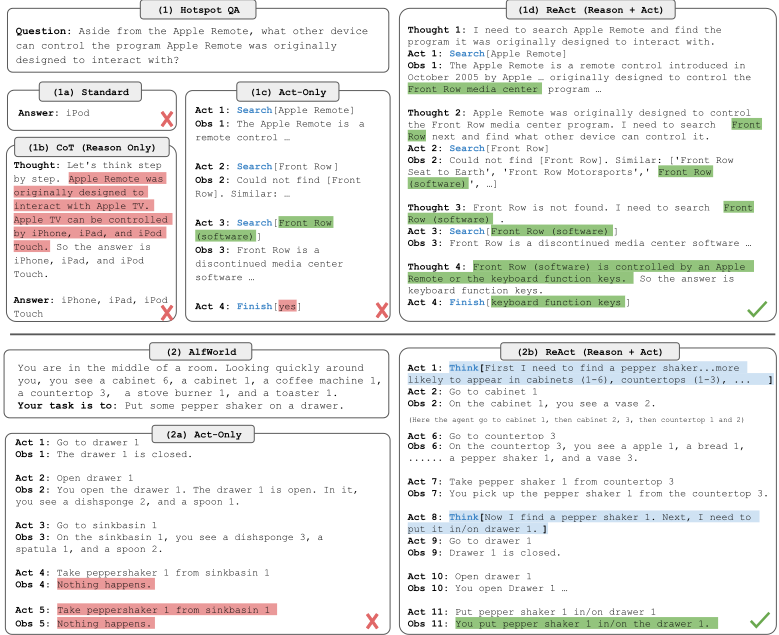
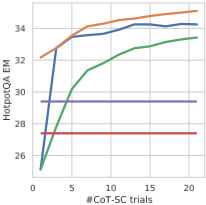
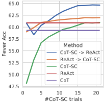
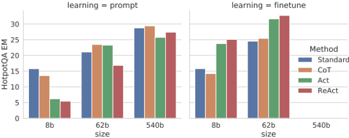
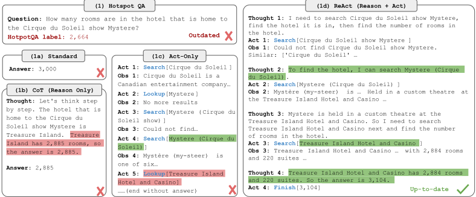
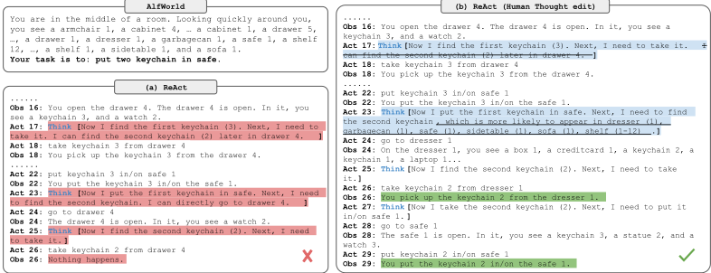

ReAct：在语言模型中协同推理与行动
论文针对 LLM 中推理与行动割裂的问题：CoT 推理是静态黑盒，不与外部世界接地，易产生幻觉与错误传播；纯行动模型则缺乏高层规划与工作记忆。ReAct 的做法是把语言空间并入 Agent 动作空间，用 few-shot 提示让模型交替生成 thought-action-observation 轨迹：thought 负责分解目标、跟踪进度、处理异常，action 调用 Wikipedia API 等外部环境获取信息并反哺推理。在 HotpotQA/FEVER 上，ReAct 显著降低幻觉（成功模式假阳性 6% vs CoT 14%），与 CoT-SC 按启发式回退组合后用 3-5 个样本即达到 CoT-SC 21 样本的性能；在 ALFWorld/WebShop 上仅用 1-2 个示例即超过用 10^3~10^5 实例训练的 IL/RL 方法。对团队而言，这是 Agent loop 与工具调用范式的奠基工作，直接指导 harness 设计、提示模板组织与可靠性评测。
LLM 的推理（如 chain-of-thought）与行动（如动作计划生成）此前被作为独立课题研究：CoT 是静态黑盒，用模型内部表示生成思考、不与外部世界接地，导致事实幻觉与推理链上的错误传播；而面向交互环境的行动方法不使用语言模型做高层抽象推理或维护工作记忆。此前缺乏对推理与行动如何以协同方式结合来完成通用任务、以及这种结合相比单独使用是否带来系统性收益的研究。
ReAct 将 Agent 动作空间扩充为 A∪L（L 为语言空间）：语言动作（thought/推理轨迹）不改变外部环境、不产生观察反馈，而是对当前上下文 c_t 进行推理、组合有用信息并更新上下文以支持后续推理或行动。实现上用冻结的 PaLM-540B 配 few-shot 人工编写的 thought-action-observation 轨迹范例：推理为主的知识密集任务使用密集 thought，决策类任务让模型自行稀疏地安排 thought 出现位置。知识密集任务上设计两种与 CoT-SC 的回退组合启发式（ReAct→CoT-SC：步数超限则回退；CoT-SC→ReAct：多数答案置信不足则回退）；另用 3,000 条 ReAct 生成的正确轨迹 bootstrap finetune 较小模型（PaLM-8/62B）。工具侧设计了仅含 search/lookup/finish 三种动作的简单 Wikipedia API，迫使模型通过显式语言推理进行检索。
HotpotQA：ReAct 27.4 EM 略低于 CoT 29.4；FEVER：ReAct 60.9 高于 CoT 56.3；两任务上 ReAct 均一致优于 Act-only
幻觉分析：CoT 成功模式假阳性 14% vs ReAct 6%，幻觉占 CoT 失败模式的 56%；非信息性检索占 ReAct 错误案例的 23%
最佳提示组合为 ReAct→CoT-SC（HotpotQA）与 CoT-SC→ReAct（FEVER），用 3-5 个样本即达到 CoT-SC 21 个样本的性能
ALFWorld：最佳 ReAct 试验成功率 71%，显著超过最佳 Act（45%）与 BUTLER（37%）；对 Act 的相对提升为 33%-90%、平均 62%；ReAct 71% vs IM 风格的 ReAct-IM 53%
WebShop：ReAct 比此前最佳成功率绝对提升 10%；one-shot Act 提示已与 IL 及 IL+RL 方法持平
Finetuning：仅用 3,000 条轨迹，PaLM-8B finetuned ReAct 超过所有 PaLM-62B 提示方法，PaLM-62B finetuned ReAct 超过所有 540B 提示方法
GPT-3（text-davinci-002）在 HotpotQA 与 ALFWorld 上持续优于 PaLM-540B，表明 ReAct 提示跨模型有效
首次提出用纯提示范式在 LLM 中协同推理与行动：把语言空间并入动作空间，thought 作为不改变环境的动作来更新上下文。与 CoT（静态、不接地、易幻觉）、Act-only（无推理引导行动）、Inner Monologue（仅注入环境反馈的密集'独白'，缺乏高层目标分解与常识推理）不同，论文声称 ReAct 是首个在闭环交互环境中结合 LLM 推理与行动的工作，且推理轨迹稀疏灵活、类型多样，并带来可解释性、可信度与可诊断性收益。
相关度级别：high
命中能力域：3.3 Agent 架构与工具使用 | 3.2 提示工程 | 3.1 上下文工程与记忆 | 3.5 评测与可靠使用
理由：ReAct 直接命中团队两个核心域：3.3（Agent loop/harness 设计、工具调用——Wikipedia API 的 search/lookup/finish 是最简工具接口雏形，thought 承担规划、进度跟踪与反思）与 3.2（few-shot thought-action-observation 轨迹提示设计、与 CoT/CoT-SC 的系统对比）。同时其 'act to reason' 通过外部知识库检索增强推理、thought 更新上下文对应 3.1；失败模式人工标注分析、幻觉抑制与人机协作 thought 编辑对应 3.5。团队构建代码生成/审查、知识库问答等 Agent 工具时，ReAct 是几乎所有 Agent harness 的基础设计模式，属于必读奠基工作。
建议动作：深入精读并做内部分享
arXiv:2210.03629v3 [cs.CL] 10 Mar 2023
Shunyu Yao ∗ *,1 , Jeffrey Zhao 2 , Dian Yu 2 , Nan Du 2 , Izhak Shafran 2 , Karthik Narasimhan 1 , Yuan Cao 2
1 普林斯顿大学计算机科学系 2 Google Research，Brain 团队
{shunyuy,karthikn}@princeton.edu 2 {jeffreyzhao,dianyu,dunan,izhak,yuancao}@google.com
尽管大语言模型（LLMs）在语言理解和交互式决策等各类任务上已展现出令人瞩目的性能，但其推理能力（例如思维链（chain-of-thought, CoT）提示）与行动能力（例如行动计划生成）此前主要被作为两个独立的课题分别加以研究。在本文中，我们探索让 LLMs 以交错的方式同时生成推理轨迹和任务特定动作，从而使二者之间产生更大的协同效应：推理轨迹帮助模型归纳、跟踪和更新行动计划，并处理异常情况；而动作则使模型能够与知识库或环境等外部来源进行交互并从中获取额外信息。我们将该方法命名为 ReAct，并将其应用于一系列多样化的语言和决策任务，结果表明其不仅优于最先进的基线方法，还提升了人类可解释性和可信度。具体而言，在问答（HotpotQA）和事实验证（Fever）任务上，ReAct 通过与一个简单的 Wikipedia API 交互，克服了思维链推理中普遍存在的幻觉和错误传播问题，并生成类似人类的任务求解轨迹，这些轨迹比没有推理轨迹的基线方法更具可解释性。此外，在两个交互式决策基准测试（benchmark）（ALFWorld 和 WebShop）上，ReAct 分别以 34% 和 10% 的绝对成功率优势超越模仿学习和强化学习方法，而其提示中仅使用了一两个上下文学习（in-context learning）示例。
人类智能的一个独特特征是能够将面向任务的动作与言语推理（verbal reasoning，或称内部言语，Alderson-Day & Fernyhough, 2015）无缝结合，已有理论认为这种能力在人类认知中发挥着重要作用，使人能够实现自我调节或制定策略（Vygotsky, 1987; Luria, 1965; Fernyhough, 2010），并维持工作记忆（Baddeley, 1992）。以在厨房里做一道菜为例。在任意两个具体动作之间，我们可能会用语言进行推理，以便跟踪进度（“现在所有东西都切好了，我应该把那锅水加热”）、处理异常情况或根据实际情况调整计划（“我没有盐了，那就用酱油和胡椒代替吧”），并意识到何时需要外部信息（“我该怎么准备面团？让我上网搜一下”）。我们也可能采取行动（打开食谱书阅读菜谱、打开冰箱、检查食材）来支持推理并回答问题（“我现在能做什么菜？”）。“行动”与“推理”之间的这种紧密协同使人类能够快速学习新任务，并进行稳健的决策或推理，即使身处以前未见过的情境或面临信息不确定性时也是如此。
最近的研究结果已经暗示了在自主系统中将语言推理与交互式决策相结合的可能性。一方面，经过适当提示的大语言模型（LLMs）已展现出涌现能力，能够在算术、常识和符号推理任务中执行多步推理轨迹，从问题中推导出答案（Wei et al., 2022）。然而，这种“思维链”（chain-of-thought, CoT）推理是一个静态的黑箱：模型使用其自身的内部表示来生成想法，而并未锚定于外部世界，这限制了其进行反应式推理或更新知识的能力。这可能导致事实幻觉以及在推理过程中的错误传播等问题（图 1 (1b)）。另一方面，近期工作已探索了使用预训练语言模型在交互式环境中进行规划与行动（Ahn et al., 2022; Nakano et al., 2021; Yao et al., 2020; Huang et al., 2022a），其重点在于通过语言先验来预测动作。这些方法通常将多模态观测转换为文本，使用语言模型生成特定领域的动作或计划，然后使用控制器来选择或执行它们。然而，它们并未利用语言模型对高层目标进行抽象推理，也未维护工作记忆以支持行动，唯有 Huang et al. (2022b) 例外，其执行了一种有限形式的语言推理，用以重申关于当前状态的空间事实。除了这类与少数方块交互的简单具身任务之外，目前尚无研究探讨如何以协同的方式将推理与行动相结合以解决通用任务，以及这种结合相比单独的推理或行动能否带来系统性的收益。
∗ 在 Google 实习期间完成的工作。项目页面及代码：https://react-lm.github.io/ 。

在本工作中，我们提出了 ReAct，这是一种将推理与行动同语言模型相结合的通用范式，用于解决多样化的语言推理和决策任务（图 1）。ReAct 提示 LLMs 以交错的方式生成与任务相关的语言推理轨迹和动作，这使得模型能够执行动态推理，从而为行动创建、维护和调整高层计划（reason to act，以推理促行动），同时还能与外部环境（例如 Wikipedia）交互，将额外信息纳入推理之中（act to reason，以行动促推理）。
2
我们在四个不同的基准测试上对 ReAct 和最先进的基线方法进行了实证评估：问答（HotPotQA，Yang et al., 2018）、事实核查（Fever，Thorne et al., 2018）、基于文本的游戏（ALFWorld，Shridhar et al., 2020b）以及网页导航（WebShop，Yao et al., 2022）。在 HotPotQA 和 Fever 上，借助模型可与之交互的 Wikipedia API，ReAct 的表现优于纯动作生成模型，同时与思维链（chain-of-thought，CoT）推理（Wei et al., 2022）不相上下。总体而言，最佳方法是将 ReAct 与 CoT 相结合，从而在推理过程中同时利用内部知识和外部获取的信息。在 ALFWorld 和 WebShop 上，仅使用两个甚至一个示例的 ReAct 提示即可超越用 10^3 ∼ 10^5 个任务实例训练的模仿学习或强化学习方法，成功率分别获得 34% 和 10% 的绝对提升。我们还通过展示相对于仅使用动作的受控基线方法的一致优势，证明了稀疏而灵活的推理在决策中的重要性。除了广泛的适用性和性能提升之外，推理与行动的结合还有助于提升模型在所有领域的可解释性、可信度和可诊断性，因为人类可以轻松区分来自模型内部知识与外部环境的信息，并可以通过检查推理轨迹来理解模型动作的决策依据。
总而言之，我们的主要贡献如下：（1）我们提出了 ReAct，这是一种新颖的基于提示的范式，用于在语言模型中协同推理与行动，以解决通用任务；（2）我们在多个不同的基准测试上进行了大量实验，展示了 ReAct 在少样本（few-shot）学习设置下相对于以往单独执行推理或动作生成的方法的优势；（3）我们进行了系统的消融实验与分析，以理解在推理任务中行动的重要性，以及在交互式任务中推理的重要性；（4）我们分析了 ReAct 在提示设置下的局限性（即对推理和行动行为的支持有限），并进行了初步的微调实验，展示了 ReAct 有望通过额外的训练数据得到提升。将 ReAct 扩展到更多任务上进行训练和运行，并将其与强化学习等互补范式相结合，有望进一步释放大型语言模型的潜力。
考虑一个智能体（agent）与环境交互以完成任务的通用设定。在时间步 t，智能体从环境中接收观测 o t ∈ O，并按照某种策略 π ( a t | c t ) 采取动作 a t ∈ A，其中 c t = ( o 1 , a 1 , · · · , o t - 1 , a t - 1 , o t ) 是智能体所获得的上下文。当映射 c t ↦→ a t 高度隐式且需要大量计算时，学习策略将非常具有挑战性。例如，图 1(1c) 中所示的智能体无法生成正确的最终动作（Act 4）来完成问答（QA）任务，因为这需要对轨迹上下文（Question、Act 1-3、Obs 1-3）进行复杂推理。类似地，图 1(2a) 中所示的智能体未能从上下文中理解 sinkbasin 1 并不包含 peppershaker 1，因而持续产生幻觉动作。
ReAct 的想法很简单：我们将智能体的动作空间扩展为 ˆ A = A∪L，其中 L 是语言空间。语言空间中的动作 ˆ a t ∈ L（我们将其称为思维（thought）或推理轨迹（reasoning trace））不会影响外部环境，因此不会带来观测反馈。相反，思维 ˆ a t 旨在通过对当前上下文 c t 进行推理来组合有用的信息，并更新上下文 c t +1 = ( c t , ˆ a t )，以支持后续的推理或行动。如图 1 所示，有用的思维可以有多种类型，例如：分解任务目标并制定行动计划（2b, Act 1；1d, Thought 1）、注入与任务解决相关的常识知识（2b, Act 1）、从观测中提取重要部分（1d, Thought 2, 4）、跟踪进度并转换行动计划（2b, Act 8）、处理异常并调整行动计划（1d, Thought 3），等等。
然而，由于语言空间 L 是无限制的，在这一扩展动作空间中进行学习十分困难，且需要强大的语言先验。在本文中，我们主要关注如下设定：一个冻结的大型语言模型 PaLM-540B（Chowdhery et al., 2022）1 通过少样本上下文示例（few-shot in-context examples）进行提示，为任务解决生成领域特定动作和自由形式的语言思维（图 1 (1d)、(2b)）。每个上下文示例都是人类为解决某个任务实例而产生的动作、思维与环境观测轨迹（见附录 C）。对于推理最为重要的任务（图 1(1)），我们交替生成思维和动作，使任务求解轨迹由多个思维-动作-观测（thought-action-observation）步骤组成。相比之下，对于可能涉及大量动作的决策任务（图 1(2)），思维只需稀疏地出现在轨迹中最相关的位置，因此我们让语言模型自行决定思维和动作的异步出现。
1 我们在附录 A.1 中展示了一些 GPT-3（Brown et al., 2020）的结果，其性能优于 PaLM-540B。
3
由于决策与推理能力被集成到大型语言模型中，ReAct 具备若干独特优势：A) 直观且易于设计：设计 ReAct 提示十分简单直接，因为人类标注者只需在所采取动作的基础上用语言写下自己的想法即可。本文未使用任何特设的格式选择、想法设计或示例挑选。我们将在第 3 节和第 4 节中详细介绍各任务的提示设计。B) 通用且灵活：得益于灵活的想法空间以及想法与动作交替出现的格式，ReAct 适用于动作空间和推理需求各异的多种任务，包括但不限于问答（QA）、事实验证、文字游戏和网页导航。C) 性能出色且鲁棒：ReAct 仅凭一到六个上下文示例（in-context examples）进行学习，就能对新任务实例表现出很强的泛化能力，并在不同领域中始终优于仅推理或仅行动的基线方法。我们还在第 3 节展示了启用微调后的额外收益，并在第 4 节展示了 ReAct 的性能对提示选择的鲁棒性。D) 与人类对齐且可控：ReAct 提供了可解释的序贯决策与推理过程，人类可以轻松检查其中的推理和事实正确性。此外，人类还可以通过想法编辑（thought editing）在运行过程中随时控制或纠正智能体（Agent）的行为，如第 4 节中的图 5 所示。
我们从多跳问答（multi-hop question answering）和事实核查（fact verification）等知识密集型推理任务开始。如图 1(1d) 所示，通过与 Wikipedia API 交互，ReAct 能够检索信息以支持推理，同时利用推理来确定下一步需要检索的内容，展示了推理与行动的协同作用。
领域 我们考虑两个对知识检索与推理颇具挑战性的数据集：(1) HotPotQA (Yang et al., 2018)，一个多跳问答基准测试（benchmark），需要对两个或更多 Wikipedia 段落进行推理；(2) FEVER (Thorne et al., 2018)，一个事实核查基准测试，其中每条论断（claim）根据是否存在可用于验证该论断的 Wikipedia 段落，被标注为 SUPPORTS、REFUTES 或 NOT ENOUGH INFO。在这项工作中，我们在两个任务上均采用仅问题（question-only）的设置，即模型只接收问题/论断作为输入，无法访问支持段落，必须依靠其内部知识，或通过与外部环境交互来检索知识，以支持推理。
动作空间 我们设计了一个简单的 Wikipedia web API，包含三种类型的动作以支持交互式信息检索：(1) search [ entity ]，若相应实体的 wiki 页面存在，则返回该页面的前 5 句话，否则从 Wikipedia 搜索引擎中推荐前 5 个相似实体；(2) lookup [ string ]，返回页面中下一个包含 string 的句子，模拟浏览器上的 Ctrl+F 功能。(3) finish [ answer ]，以 answer 结束当前任务。我们注意到，这种动作空间大多只能基于精确的段落名称检索到段落的一小部分，这明显弱于最先进的词法或神经检索器。其目的在于模拟人类与 Wikipedia 交互的方式，并迫使模型通过语言中的显式推理来进行检索。
ReAct 提示 对于 HotpotQA 和 Fever，我们从训练集中随机选取 6 个和 3 个案例²，并人工编写 ReAct 格式的轨迹，用作提示中的少样本示例（few-shot exemplars）。与图 1(d) 类似，每条轨迹由多个“思考-行动-观察”（thought-action-observation）步骤组成（即密集思考，dense thought），其中自由形式的思考被用于多种目的。具体而言，我们组合使用多种思考：分解问题（“我需要 search x，找到 y，然后再找到 z”）、从 Wikipedia 观察结果中提取信息（“x 始于 1844 年”、“该段落并未说明 x”）、进行常识推理（“x 不是 y，所以 z 必定是……”）或算术推理（"1844 < 1989"）、引导搜索改写（“也许我可以改为 search/look up x”），以及综合得出最终答案（“……所以答案是 x”）。更多细节参见附录 C。
2 我们发现更多的示例并不能提升性能。
4
| Prompt Method a | HotpotQA (EM) | Fever (Acc) |
|---|---|---|
| Standard | 28.7 | 57.1 |
| CoT (Wei et al., 2022) | 29.4 | 56.3 |
| CoT-SC (Wang et al., 2022a) | 33.4 | 60.4 |
| Act | 25.7 | 58.9 |
| ReAct | 27.4 | 60.9 |
| CoT-SC → ReAct | 34.2 | 64.6 |
| ReAct → CoT-SC | 35.1 | 62 |
| Supervised SoTA b | 67.5 | 89.5 |
| Prompt Method a | HotpotQA (EM) | Fever (Acc) |
a 在 Wang et al. (2022b) 中，Standard、CoT、CoT-SC 的 HotpotQA EM 分别为 27.1、28.9、33.8。
b (Zhu et al., 2021; Lewis et al., 2020)
基线方法 我们系统地消融 ReAct 轨迹，为多个基线构建提示（格式如图 1(1a-1c) 所示）：(a) 标准提示（Standard），其移除 ReAct 轨迹中所有的思考、行动和观察。(b) 思维链（CoT）提示 (Wei et al., 2022)，其移除行动和观察，作为仅进行推理的基线。我们还构建了一个自一致性（self-consistency）基线（CoT-SC）(Wang et al., 2022a;b)，即在推理时以解码温度 0.7 采样 21 条 CoT 轨迹并采纳多数答案，结果表明该方法能够持续带来优于 CoT 的性能提升。(c) 仅行动提示（Act），其移除 ReAct 轨迹中的思考，大致类似于 WebGPT (Nakano et al., 2021) 与互联网交互以回答问题的方式，尽管它在不同的任务和动作空间上运行，并且使用模仿学习和强化学习而非提示。
结合内部与外部知识 正如第 3.3 节将详述的，我们观察到 ReAct 所展示的问题求解过程更加符合事实、更有依据，而 CoT 在构建推理结构方面更为准确，但很容易出现事实或思考上的幻觉。因此，我们提出将 ReAct 与 CoT-SC 相结合，并让模型根据以下启发式规则决定何时切换到另一种方法：A) ReAct → CoT-SC：当 ReAct 在给定步数内未能返回答案时，回退到 CoT-SC。对于 HotpotQA 和 FEVER，我们分别将步数设为 7 和 5，因为我们发现更多的步数并不会提升 ReAct 的性能³。B) CoT-SC → ReAct：当 n 个 CoT-SC 样本中的多数答案出现次数少于 n/2 次（即内部知识可能无法自信地支持该任务）时，回退到 ReAct。
微调 由于大规模人工标注推理轨迹和动作面临挑战，我们考虑一种类似于 Zelikman 等人 (2022) 的自举方法，使用由 ReAct 生成的 3,000 条答案正确的轨迹（其他基线方法也采用同样做法）来微调较小的语言模型（PaLM-8/62B），使其以输入的问题/论断为条件来解码轨迹（包括所有想法、动作和观察）。更多细节见附录 B.1。
ReAct 持续优于 Act 表 1 展示了以 PaLM540B 为基础模型、采用不同提示方法时在 HotpotQA 和 Fever 上的结果。我们注意到 ReAct 在两个任务上都优于 Act，这证明了推理引导行动的价值，尤其是在综合生成最终答案方面的价值，如图 1 (1c-d) 所示。微调结果 3 也证实了推理轨迹对更明智行动的益处。
3 在所有最终答案正确的轨迹中，在 HotpotQA 上为 7 步、在 FEVER 上为 5 步的轨迹分别仅占 0.84% 和 1.33%。


| Type | Definition | ReAct | CoT | |
|---|---|---|---|---|
| Success | True positive | Correct reasoning trace and facts | 94% | 86% |
| False positive | Hallucinated reasoning trace or facts | 6% | 14% | |
| Failure | Reasoning error | Wrong reasoning trace (including failing to recover from repetitive steps) | 47% | 16% |
| Failure | Search result error | Search return empty or does not contain useful information | 23% | - |
| Failure | Hallucination | Hallucinated reasoning trace or facts | 0% | 56% |
| Failure | Label ambiguity | Right prediction but did not match the label precisely | 29% | 28% |
| | Type | Definition | ReAct | CoT |
ReAct 与思维链（CoT）的对比 另一方面，ReAct 在 Fever 上优于 CoT（60.9 对 56.3），而在 HotpotQA 上略微落后于 CoT（27.4 对 29.4）。Fever 中 SUPPORTS/REFUTES 两类论断之间可能仅有细微差别（见附录 D.1），因此通过行动来检索准确且最新的知识至关重要。为了更好地理解 ReAct 与 CoT 在 HotpotQA 上的行为差异，我们分别从 ReAct 和 CoT 中随机抽取了答案正确与答案错误（以精确匹配（EM）判定）的轨迹各 50 条（因此共计 200 个示例），并在表 2 中人工标注了它们的成功与失败模式。一些关键观察如下：
A) 幻觉是 CoT 的一个严重问题，导致其在成功模式下的假阳性率远高于 ReAct（14% 对 6%），并构成其主要失败模式（56%）。相比之下，得益于能够访问外部知识库，ReAct 的问题求解轨迹更有据可依、以事实为驱动且更值得信赖。
B) 虽然将推理、行动和观察步骤交错进行提升了 ReAct 的有据性与可信度，但这种结构性约束也降低了其在构建推理步骤方面的灵活性，导致其推理错误率高于 CoT。我们注意到 ReAct 存在一种特有的高频错误模式，即模型重复生成之前的想法和动作，我们将其归为“推理错误”的一部分，因为模型未能推理出应当采取的下一个正确动作并跳出循环 4。
C) 对 ReAct 而言，通过搜索成功检索到有信息量的知识至关重要。无信息量的搜索占错误案例的 23%，它会使模型推理偏离正轨，并让模型难以恢复和重新组织想法。这或许是在事实性与灵活性之间一种意料之中的权衡，也正是这一点促使我们提出将两种方法相结合的策略。
我们在附录 E.1 中为每种成功和失败模式提供了示例。我们还发现一些 HotpotQA 问题可能包含过时的答案标签，例如见图 4。
ReAct + CoT-SC 在提示大语言模型（LLM）时表现最佳 表 1 还显示，在 HotpotQA 和 Fever 上最佳的提示方法分别是 ReAct → CoT-SC 和 CoT-SC → ReAct。此外，图 2 展示了不同方法随所用 CoT-SC 样本数量变化的性能表现。虽然这两种 ReAct + CoT-SC 方法各自在一项任务上占优，但它们在不同样本数量下均显著且始终优于 CoT-SC，仅用 3-5 个样本即可达到 CoT-SC 使用 21 个样本时的性能。这些结果表明了在推理任务中恰当结合模型内部知识与外部知识的价值。
ReAct 在微调时表现最佳 图 3 展示了在 HotpotQA 上对四种方法（Standard、CoT、Act、ReAct）进行提示/微调的规模效应。对于 PaLM-8/62B，由于难以从上下文示例（in-context examples）中同时学会推理和行动，提示式 ReAct 在四种方法中表现最差。然而，仅用 3,000 个样本进行微调后，ReAct 成为四种方法中最佳的方法：PaLM-8B 微调后的 ReAct 优于所有 PaLM-62B 提示方法，而 PaLM-62B 微调后的 ReAct 优于所有 540B 提示方法。相比之下，对于 PaLM-8/62B 而言，微调 Standard 或 CoT 都显著差于微调 ReAct 或 Act，因为前者本质上是教模型记忆（可能存在幻觉的）知识事实，而后者是教模型如何（推理并）行动以从 Wikipedia 获取信息——这是一种对知识推理而言更具可泛化性的技能。由于所有提示方法仍与特定领域的最先进方法相去甚远（表 1），我们认为使用更多人工撰写的数据进行微调可能是释放 ReAct 能力的更好途径。
4 我们怀疑这可能是由于次优的贪心解码过程所致，未来采用更好解码方法（例如束搜索）的工作或有助于解决这一问题。
6

我们还在两个基于语言的交互式决策任务上测试 ReAct，即 ALFWorld 和 WebShop，这两个任务都以复杂环境为特点，要求智能体（agent）在稀疏奖励下进行长时程行动，因此需要借助推理来有效地行动和探索。
ALFWorld ALFWorld (Shridhar et al., 2020b)（图 1(2)）是一个合成的基于文本的游戏，旨在与具身的 ALFRED 基准测试（benchmark）(Shridhar et al., 2020a) 对齐。它包含 6 种类型的任务，在这些任务中，智能体需要通过文本动作（例如 go to coffeetable 1、take paper 2、use desklamp 1）在模拟的家庭环境中导航并交互，以实现某个高层目标（例如在台灯下检查纸张）。一个任务实例可能包含 50 多个位置，专家策略需要 50 多步才能解决，因此对智能体规划并跟踪子目标以及系统性探索（例如为寻找台灯而逐一检查所有书桌）的能力构成了挑战。特别地，ALFWorld 内置的一项挑战是需要确定常见家居物品可能所在的位置（例如台灯很可能放在书桌、架子或梳妆台上），这使得该环境非常适合大语言模型（LLM）利用其预训练的常识知识。为了构建 ReAct 的提示，我们从训练集中为每种任务类型随机标注 3 条轨迹，其中每条轨迹包含稀疏的思考（thought），这些思考用于（1）分解目标、（2）跟踪子目标的完成情况、（3）确定下一个子目标，以及（4）通过常识推理在哪里找到物体以及该如何处理它。我们在附录 C.4 中展示了用于 ALFWorld 的提示。遵循 Shridhar et al. (2020b)，我们在任务特定设置下于 134 个未见过的评估游戏上进行评估。出于稳健性考虑，我们通过从所标注的 3 条轨迹中选取 2 条轨迹的每一种排列，为每种任务类型构建 6 个提示。Act 提示使用相同的轨迹构建，但不包含思考——由于任务实例是从训练集中随机选取的，这既不偏向 ReAct 也不偏向 Act，从而提供了公平且受控的比较，以检验稀疏思考的重要性。作为基线，我们使用 BUTLER (Shridhar et al., 2020b)，即一个针对每种任务类型在 10^5 条专家轨迹上训练的模仿学习智能体 5。
WebShop ReAct 也能与含噪的真实世界语言环境进行交互以用于实际应用吗？我们研究了 WebShop（Yao et al., 2022），这是一个最近提出的在线购物网站环境，包含 118 万件真实商品和 1.2 万条人工指令。与 ALFWorld 不同，WebShop 包含种类繁多的结构化和非结构化文本（例如从 Amazon 抓取的商品标题、描述和选项），并要求智能体（agent）根据用户指令（例如“我正在寻找一个带抽屉的床头柜。它应该有镀镍饰面，并且价格低于 140 美元”）通过网页交互（例如搜索"nightstand drawers"，选择"color: modern-nickel-white"或"back to search"等按钮）来购买商品。该任务在 500 条测试指令上通过平均得分（所选商品覆盖的期望属性百分比在所有回合上取平均）和成功率（所选商品满足所有要求的回合所占百分比）进行评估。我们将 Act 提示设计为包含搜索、选择商品、选择选项和购买等动作，而 ReAct 提示还额外进行推理，以确定要探索什么、何时购买，以及哪些商品选项与指令相关。示例提示见表 6，模型预测见附录中的表 10。我们将与用 1,012 条人工标注轨迹训练的模仿学习（IL）方法，以及额外用 10,587 条训练指令训练的模仿学习 + 强化学习（IL + RL）方法进行比较。
5 Micheli & Fleuret (2021) 在 3553 个任务实例上微调了 GPT-2 模型，取得了比 BUTLER 好得多的性能，但该模型是在所有任务类型上训练的，因此未被纳入作为基线。
7
| Method | Pick | Clean | Heat | Cool | Look | Pick 2 | All | Method | Score | SR |
|---|---|---|---|---|---|---|---|---|---|---|
| Act (best of 6) | 88 | 42 | 74 | 67 | 72 | 41 | 45 | Act | 62.3 | 30.1 |
| ReAct (avg) | 65 | 39 | 83 | 76 | 55 | 24 | 57 | ReAct | 66.6 | 40 |
| ReAct (best of 6) | 92 | 58 | 96 | 86 | 78 | 41 | 71 | IL IL+RL | 59.9 | 29.1 |
| ReAct-IM (avg) | 55 | 59 | 60 | 55 | 23 | 24 | 48 | IL IL+RL | 62.4 | 28.7 |
| ReAct-IM (best of 6) | 62 | 68 | 87 | 57 | 39 | 33 | 53 | Human Expert | 82.1 | 59.6 |
| BUTLER g (best of 8) | 33 | 26 | 70 | 76 | 17 | 12 | 22 | Human Expert | 82.1 | 59.6 |
| BUTLER (best of 8) | 46 | 39 | 74 | 100 | 22 | 24 | 37 |
| Method | Pick | Clean | Heat | Cool | Look | Pick 2 | All | Method | Score | SR |
结果 ReAct 在 ALFWorld（表 3）和 WebShop（表 4）上均优于 Act。在 ALFWorld 上，最佳 ReAct 试验取得了 71% 的平均成功率，显著优于最佳 Act（45%）和 BUTLER（37%）试验。事实上，即使是最差的 ReAct 试验（48%）也胜过了这两种方法的最佳试验。此外，ReAct 相对于 Act 的优势在六次受控试验中保持一致，相对性能提升介于 33% 到 90% 之间，平均为 62%。从定性角度来看，我们观察到，在完全没有任何思考的情况下，Act 无法将目标正确分解为更小的子目标，或者会失去对环境当前状态的跟踪。比较 ReAct 与 Act 的示例轨迹见附录 D.2.1 和附录 D.2.2。
在 Webshop 上，单样本（one-shot）Act 提示的性能已经与 IL 和 IL+RL 方法相当。通过附加的稀疏推理，ReAct 取得了显著更好的性能，相比此前最佳成功率获得了 10% 的绝对提升。通过检查示例，我们发现 ReAct 更有可能通过推理来弥合含噪观测与动作之间的差距，从而识别出与指令相关的产品和选项（例如：“对于‘节省空间的客厅软垫凳’，该商品有'39x18x18inch'和‘蓝色’两个选项，看起来值得购买。”）。然而，现有方法仍远不及人类专家的性能（表 4），人类专家会进行多得多的产品探索和查询重新表述，而这些对基于提示的方法来说仍然具有挑战性。
关于内部推理与外部反馈的价值 据我们所知，ReAct 是首个在闭环系统内将基于大语言模型（LLM）的推理与行动相结合并应用于交互环境的示范工作。也许最接近的先前工作是 Huang 等人（2022b）提出的 Inner Monologue（IM），其中具身智能体（embodied agent）的动作由同名的“内心独白”（inner monologue）驱动。然而，IM 的“内心独白”仅限于对环境状态的观测，以及智能体为使目标得到满足而需要完成的内容。相比之下，ReAct 中用于决策的推理轨迹是灵活且稀疏的，可以为不同任务诱导出多样化的推理类型（见第 2 节）。
为了展示 ReAct 与 IM 之间的差异，并凸显内部推理相较于对外部反馈作出简单反应的重要性，我们进行了一项消融实验，使用了一种由类似 IM 的密集外部反馈构成的思维模式。如表 3 所示，ReAct 大幅优于 IM 风格的提示（ReAct-IM）（总体成功率为 71 对 53），在六个任务中的五个上保持一致优势。从定性角度来看，我们观察到 ReAct-IM 常常在判断子目标何时已经完成、或下一个子目标应该是什么时出错，这是由于缺乏高层目标分解。此外，由于缺乏常识推理，许多 ReAct-IM 轨迹难以确定某件物品在 ALFWorld 环境中可能位于何处。这两个缺点都可以在 ReAct 范式中得到解决。有关 ReAct-IM 的更多细节见附录 B.2。ReAct-IM 的示例提示见附录 C.4，示例轨迹见附录 D.2.3。
8
用于推理的语言模型 利用大语言模型（LLM）进行推理的最著名工作也许是思维链（Chain-of-Thought, CoT）(Wei et al., 2022)，它揭示了 LLM 为解决问题而构建自身“思考过程”的能力。此后出现了多项后续工作，包括用于解决复杂任务的由易到难提示（least-to-most prompting）(Zhou et al., 2022)、零样本 CoT（zero-shot CoT）(Kojima et al., 2022)，以及基于自一致性（self-consistency）的推理 (Wang et al., 2022a)。最近，(Madaan & Yazdanbakhsh, 2022) 系统地研究了 CoT 的表述形式与结构，并观察到符号、模式和文本的存在对 CoT 的有效性至关重要。其他工作还被扩展到超越简单提示的更复杂推理架构。例如，Selection-Inference (Creswell et al., 2022) 将推理过程分为“选择”和“推断”两个步骤。STaR (Zelikman et al., 2022) 通过在模型自身生成的正确推理依据（rationale）上对模型进行微调，从而自举（bootstrap）推理过程。忠实推理（Faithful reasoning）(Creswell & Shanahan, 2022) 将多步推理分解为三个步骤，每个步骤分别由一个专用的语言模型（LM）执行。类似的方法还有 Scratchpad (Nye et al., 2021)，它在中间计算步骤上微调 LM，同样在多步计算问题上展示了改进。与这些方法不同，ReAct 所做的不仅仅是孤立的、固定的推理，还将模型动作及其相应的观察整合为连贯的输入流，使模型能够更准确地进行推理，并处理推理之外的任务（例如交互式决策）。
用于决策的语言模型 LLM 的强大能力使其能够执行语言生成之外的任务，将 LLM 用作决策的策略模型正变得越来越流行，尤其是在交互式环境中。WebGPT (Nakano et al., 2021) 使用 LM 与网页浏览器交互、浏览网页，并从 ELI5 (Fan et al., 2019) 中推断复杂问题的答案。与 ReAct 相比，WebGPT 并未显式地对思考和推理过程建模，而是依赖昂贵的人类反馈来进行强化学习。在对话建模方面，诸如 BlenderBot (Shuster et al., 2022b) 和 Sparrow (Glaese et al., 2022) 之类的聊天机器人，以及诸如 SimpleTOD (Hosseini-Asl et al., 2020) 之类的面向任务的对话系统，也训练 LM 对 API 调用做出决策。与 ReAct 不同，它们同样没有显式地考虑推理过程，并且也依赖昂贵的数据集和人类反馈收集来进行策略学习。相比之下，ReAct 以一种成本低得多的方式学习策略，因为决策过程只需要对推理过程的语言描述。6
大语言模型（LLM）也日益被应用于交互式和具身环境中进行规划与决策。在这方面，与 ReAct 或许最相关的是 SayCan（Ahn et al., 2022）和 Inner Monologue（Huang et al., 2022b），它们使用 LLM 进行机器人动作规划与决策。在 SayCan 中，LLM 被提示直接预测机器人可能采取的动作，随后由一个基于视觉环境的可供性（affordance）模型对这些动作进行重排序，以得到最终预测。Inner Monologue 则通过加入与其同名的“内心独白”（inner monologue）进一步改进，该机制以注入环境反馈的方式实现。据我们所知，Inner Monologue 是首个展示此类闭环系统的工作，而 ReAct 正是在此基础上构建的。然而，我们认为 Inner Monologue 并未真正包含内心想法（inner thoughts）——这一点将在第 4 节中详细阐述。我们还注意到，在交互决策过程中将语言用作语义丰富的输入，已在其他设置下被证明是成功的（Abramson et al., 2020; Karamcheti et al., 2021; Huang et al., 2022a; Li et al., 2022）。越来越明显的是，在 LLM 的帮助下，语言作为一种基本的认知机制将在交互与决策中发挥关键作用。此外，LLM 的进展还启发了诸如 Reed et al. (2022) 等多功能、通用型智能体（agent）的开发。
我们提出了 ReAct——一种在大语言模型中协同推理与行动的简单而有效的方法。通过在多跳问答、事实核查和交互式决策任务上开展的一系列多样化实验，我们表明 ReAct 能够以可解释的决策轨迹取得更优的性能。尽管我们的方法十分简单，但具有大动作空间的复杂任务需要更多示例才能学好，遗憾的是，这很容易超出上下文学习（in-context learning）的输入长度限制。我们在 HotpotQA 上探索了微调方法
6 人类反馈也可以以互补的方式纳入其中，但我们将其留作未来工作。
9
并取得了初步的可喜结果，但学习更多高质量的人工标注将是进一步提升性能的迫切所需。通过多任务训练来扩展 ReAct，并将其与强化学习等互补范式相结合，有望产生更强大的智能体，从而进一步释放 LLM 在更多应用中的潜力。
我们的主要实验是在 PaLM（Chowdhery et al., 2022）上进行的，该模型目前尚未公开开放访问。为了提高可复现性，我们在附录 C 中提供了所有使用的提示（prompt），在附录 A.1 中提供了使用 GPT-3（Brown et al., 2020）的补充实验，并在 https://anonymous.4open.science/r/ReAct-2268/ 提供了相关的 GPT-3 ReAct 提示代码。
ReAct 促使大语言模型（LLM）生成比以往方法更具人类可解释性、可诊断性和可控性的任务求解轨迹。然而，将大语言模型与动作空间相连接以与外部环境（例如网络、物理环境）进行交互存在潜在危险，例如查询不当或私密信息，或在环境中采取有害行动。我们的实验通过将交互限制在不含私密信息的特定网站（Wikipedia 或 WebShop）上，并在动作空间设计中不包含任何危险动作（即模型无法在作为研究基准测试（benchmark）的 WebShop 上真正购买产品，也无法编辑 Wikipedia），从而将此类风险降至最低。我们认为，研究人员在未来设计更广泛的实验之前，应当了解此类风险。
| PaLM-540B | GPT-3 | |
|---|---|---|
| HotpotQA (exact match) | 29.4 | 30.8 |
| ALFWorld (success rate %) | 70.9 | 78.4 |
| | PaLM-540B | GPT-3 |
我们进行了额外的 GPT-3（Brown et al., 2020）实验，以确认 ReAct 提示的性能在不同的大型语言模型之间具有普适性。如表 5 所示，GPT-3（text-davinci-002，贪心解码）在 HotpotQA 和 ALFWorld 上始终优于 PaLM-540B，这可能是因为它经过了人类指令遵循的微调。这表明 ReAct 提示在不同任务上对不同的大型语言模型都是有效的。这些实验的代码见 https://react-lm.github.io/ 。
A.2
ReAct
在 HotpotQA 上获取最新知识

在检查轨迹时，我们还发现有时 ReAct 会与数据集标签不一致，因为标签本身可能已经过时。例如，如图 4 所示，问题询问一家酒店的规模，而该规模自 HotpotQA 构建之时起已经增大。Standard 和思维链（CoT）由于幻觉而给出错误答案；Act 尽管可以进行真实世界的网页交互，却由于缺乏推理来指导如何与互联网交互以完成问答（QA）而失败。只有 ReAct 能够从互联网检索到最新信息并给出合理的答案。因此，更好地融合推理能力，可能有助于近期的互联网增强语言模型（Nakano et al., 2021; Lazaridou et al., 2022; Shuster et al., 2022a）解决需要最新知识的任务。
我们还探索了与 ReAct 的人在回路（human-in-the-loop）交互，让人类能够检查并编辑 ReAct 的推理轨迹。图 5 显示，只需删除 Act 17 中一句产生幻觉的句子，并在 Act 23 中添加一些提示，就能使 ReAct 大幅改变其行为，以与这些人类思维编辑保持一致并成功完成任务。从人类的角度来看，解决这样的任务变得显著更加容易——从输入数十个动作变为只需编辑几条思维，这使得新形式的人机协作成为可能。我们注意到，这种即时进行的策略编辑 作为会议论文发表于 ICLR 2023
14

对于 Act 和以往的强化学习（RL）方法来说是困难的，因为人类无法改变模型参数，而仅改变少数几个动作可能无法编辑模型其余的行为。这一范式也不仅仅是像 Huang et al. (2022b) 中那样通过人类对话来更新目标或子目标——编辑 ReAct 的思维固然可以做到这些，但它还能够修改模型的内部信念、推理风格，或灵活的思维空间所支持的任何内容，从而更好地完成任务。我们相信这是人类对齐（human alignment）方面一个令人兴奋的方向，并将更系统的研究留作未来工作。
所有微调实验均使用 64 的批大小（batch size）。在 PaLM-8B 上，我们对 ReAct 和 Act 方法微调 4,000 步，对 Standard 和 CoT 方法微调 2,000 步。在 PaLM-62B 上，我们对 ReAct 和 Act 方法微调 4,000 步，对 Standard 和 CoT 方法微调 1,000 步。我们发现 ReAct 和 Act 方法通常能从更多的训练步数（以及更多的训练数据）中获益，而 Standard 和 CoT 方法在微调后很快便会出现性能退化。
对于 IM 风格的消融实验，我们对 ReAct 中使用的相同专家轨迹进行了重新标注，在轨迹内部加入密集的外部反馈思考，这些思考将 ReAct-IM 限制为只能思考 (1) 分解当前目标，以及 (2) 需要完成的当前子目标。具体而言，ReAct-IM 缺少以下几类思考：(1) 判断子目标何时完成 (2) 确定下一个子目标应该是什么 (3) 诱导 LLM 参考其内部预训练知识来识别物品可能位于环境中的哪些位置。
16
Answer What is the elevation range for the area that the eastern sector of Colorado orogeny extends into?
the
Let's think step by step. The eastern sector of Colorado orogeny extends into the High Plains. High Plains rise in elevation from around 1,800 to 7,000 ft, so the answer is 1,800 to 7,000 ft. 1,800 to 7,000 ft
Question Musician and satirist Allie Goertz wrote
a
song about the
"The Simpsons"
character Milhouse, who Matt Groening named after who?
Let's think step by step. Milhouse was named after U.S. president Richard Nixon, so the answer is Richard Nixon.
Answer Richard Nixon
Question Which documentary is about Finnish rock groups, Adam Clayton Powell or The Saimaa Gesture?
Let's think step by step. Adam Clayton Powell (film) is a documentary about an African-American politician, not Finnish rock groups. So the documentary about Finnish rock groups must instead be The Saimaa Gesture. The Saimaa Gesture
Question What profession does Nicholas Ray and Elia Kazan have in common? Thought Let's think step by step. Professions of Nicholas Ray are director, screenwriter, and actor. Professions of Elia Kazan are director, producer, screenwriter, and actor. So profession Nicholas Ray and Elia Kazan have in common is director, screenwriter, and actor. Answer director, screenwriter, actor
Question Which magazine was started first Arthur's Magazine or First for Women?
Thought Let's think step by step.
Arthur's Magazine was started in
1844.
First
Answer for Women was started in
1989.
1844
(Arthur's Magazine)
<
1989
(First for
Women), so Arthur's Magazine was started first.
Arthur's Magazine
Thought Were Pavel Urysohn and Leonid Levin known for the same type of work? Let's think step by step. Pavel Urysohn is a mathematician. Leonid Levin is a mathematician and computer scientist. So Pavel Urysohn and Leonid Levin have the same type of work.
Answer Yes
17
| 0 | 1 |
|---|---|
| Observation 4 | The High Plains are a subregion of the Great Plains. From east to west, the High Plains rise in elevation from around 1,800 to 7,000 ft (550 to 2,130 m).[3] |
| Thought 5 | High Plains rise in elevation from around 1,800 to 7,000 ft, so the answer is 1,800 to 7,000 ft. |
| Action 5 | Finish[1,800 to 7,000 ft] |
| Question | Musician and satirist Allie Goertz wrote a song about the "The Simpsons" character Milhouse, who Matt Groening named after who? |
| Thought 1 | The question simplifies to "The Simpsons" character Milhouse is named after who. I only need to search Milhouse and find who it is named after. |
| Action 1 1 | Search[Milhouse] Milhouse Mussolini Van Houten is a recurring character |
| Observation | in the Fox animated television series The Simpsons voiced by Pamela Hayden and created by Matt Groening. |
| Thought 2 | The paragraph does not tell who Milhouse is named after, maybe I can look up "named after". |
| Action 2 Observation 2 | Lookup[named after] (Result 1 / 1) Milhouse was named after U.S. president Richard Nixon, whose middle name was Milhous. Milhouse was named after U.S. president Richard Nixon, so the answer is |
| Thought 3 | Richard Nixon. |
| Action 3 Question | Finish[Richard Nixon] Which documentary is about Finnish rock groups, Adam Clayton Powell or The Saimaa Gesture? |
| Thought 1 | I need to search Adam Clayton Powell and The Saimaa Gesture, and find which documentary is about Finnish rock groups. |
| Action 1 Observation 1 | Search[Adam Clayton Powell] Could not find [Adam Clayton Powell]. Similar: ['Adam Clayton Powell III', 'Seventh Avenue (Manhattan)', 'Adam Clayton Powell Jr. State Office Building', 'Isabel Washington Powell', 'Adam Powell', 'Adam Clayton Powell |
| Thought 2 Action 2 | (film)', 'Giancarlo Esposito']. To find the documentary, I can search Adam Clayton Powell (film). Search[Adam Clayton Powell (film)] |
| Observation 2 | Adam Clayton Powell is a 1989 American documentary film directed by Richard Kilberg. The film is about the rise and fall of influential African-American politician Adam Clayton Powell Jr.[3][4] It was later aired as part of the PBS series The American Experience. |
| Thought 3 | Adam Clayton Powell (film) is a documentary about an African-American politician, not Finnish rock groups. So the documentary about Finnish rock groups must instead be The Saimaa Gesture. Finish[The Saimaa Gesture] |
| Action 3 Question Thought 1 | What profession does Nicholas Ray and Elia Kazan have in common? I need to search Nicholas Ray and Elia Kazan, find their professions, then |
| Action 1 Observation 1 | find the profession they have in common. Search[Nicholas Ray] Nicholas Ray (born Raymond Nicholas Kienzle Jr., August 7, 1911 - June 16, 1979) was an American film director, screenwriter, and actor best known the 1955 film Rebel Without a Cause. |
| Thought 2 | for Professions of Nicholas Ray are director, screenwriter, and actor. I need |
| Action 2 2 | to search Elia Kazan next and find his professions. Search[Elia Kazan] Elia Kazan was an American film and theatre director, producer, screenwriter |
| Observation | and actor. Professions of Elia Kazan are director, producer, screenwriter, and actor. So profession Nicholas Ray and Elia Kazan have in common is director, |
| Thought 3 Action 3 | screenwriter, and actor. Finish[director, screenwriter, actor] |
| Question Thought 1 | Which magazine was started first Arthur's Magazine or First for Women? I need to search Arthur's Magazine and First for Women, and find which was started first. |
| Action 1 Observation 1 | Search[Arthur's Magazine] Arthur's Magazine (1844-1846) was an American literary periodical published in Philadelphia in the 19th century. |
| Thought 2 | Arthur's Magazine was started in 1844. I need to search First for Women next. |
| Action 2 Observation 2 | Search[First for Women] First for Women is a woman's magazine published by Bauer Media Group in the |
| Thought 3 | USA.[1] The magazine was started in 1989. First for Women was started in 1989. 1844 (Arthur's Magazine) < 1989 (First for Women), so Arthur's Magazine was started first. |
| Action 3 | Finish[Arthur's Magazine] |
| Question Thought 1 | Were Pavel Urysohn and Leonid Levin known for the same type of work? I need to search Pavel Urysohn and Leonid Levin, find their types of work, then find if they are the same. |
| Action 1 | Search[Pavel Urysohn] |
| 0 | 1 |
18
| 0 | 1 |
|---|---|
| Observation 1 | Pavel Samuilovich Urysohn (February 3, 1898 - August 17, 1924) was a Soviet mathematician who is best known for his contributions in dimension theory. |
| Thought 2 | Pavel Urysohn is a mathematician. I need to search Leonid Levin next and find its type of work. |
| Action 2 | Search[Leonid Levin] |
| Observation 2 | Leonid Anatolievich Levin is a Soviet-American mathematician and computer scientist. |
| Thought 3 | Leonid Levin is a mathematician and computer scientist. So Pavel Urysohn and Leonid Levin have the same type of work. |
| Action 3 | Finish[yes] |
| 0 | 1 |
19
判断是否存在支持（SUPPORTS）或反驳（REFUTES）某论断（Claim）的观察（Observation），或者信息是否不足（NOT ENOUGH INFORMATION）。
判断是否存在支持（SUPPORTS）或反驳（REFUTES）某论断（Claim）的观察（Observation），或者信息是否不足（NOT ENOUGH INFORMATION）。
| 0 | 1 |
|---|---|
| Claim Thought | Beautiful reached number two on the Billboard Hot 100 in 2003. The song peaked at number two on the Billboard Hot 100 in the United States, but not sure if it was in 2003. |
| Answer | NOT ENOUGH INFO |
| ReAct | Determine if there is Observation that SUPPORTS or REFUTES a Claim, or if there is NOT ENOUGH INFORMATION. |
| Claim Thought 1 | Nikolaj Coster-Waldau worked with the Fox Broadcasting Company. I need to search Nikolaj Coster-Waldau and find if he has worked with the Fox Broadcasting Company. Search[Nikolaj Coster-Waldau] |
| Action 1 Observation 1 | Nikolaj William Coster-Waldau (born 27 July 1970) is a Danish actor and producer. He graduated from the Danish National School of Performing Arts in Copenhagen in 1993,[1] and had his breakthrough role in Denmark with the film Nightwatch (1994). He played Jaime Lannister in the HBO fantasy drama series Game of Thrones, for which he received two Primetime Emmy Award nominations for Outstanding Supporting Actor in a Drama Series.. Coster-Waldau has appeared in numerous films in his native Denmark and Scandinavia, including Headhunters (2011) and A Thousand Times Good Night (2013). In the U.S, his debut film role was in the war film Black Hawk Down (2001), playing Medal of Honor recipient Gary Gordon.[2] He then played a detective in the short-lived Fox television series New Amsterdam (2008), and appeared in the 2009 Fox television film Virtuality, originally intended as a pilot. |
| Thought 2 | Because he "appeared in the 2009 Fox television film Virtuality", he should have worked with the Fox Broadcasting Company. |
| Action 2 | Finish[SUPPORTS] |
| Claim Thought 1 | Stranger Things is set in Bloomington, Indiana. I should search for Stranger Things, and see if it is set in Bloomington, Indiana. |
| Action 1 Observation 1 | Search[Stranger Things] Stranger Things is an American science fiction horror drama television series created by the Duffer Brothers. Set in the 1980s, primarily in the fictional town of Hawkins, Indiana, the series centers on a number of mysteries and supernatural events occurring around the town and their impact on an ensemble of child and adult characters. |
| Thought 2 | The observation says that it is set in a "fictional town of Hawkins, Indiana", so it is not set in Bloomington. |
| Action 2 | Finish[REFUTES] |
| Claim Thought 1 | Beautiful reached number two on the Billboard Hot 100 in 2003. I need to search the song Beautiful and find if it reached number two on the Billboard Hot 100 in 2003. |
| Action 1 Observation 1 | Search[Beautiful] Could not find [Beautiful]. Similar: ['Beautiful', 'Beautiful, Beautiful', 'A Beautiful Mind (film)', 'Beautiful (Christina Aguilera song)', 'Life Is Beautiful']. |
| Thought 2 | From suggestions, I should search "Beautiful (Christina Aguilera song)" to find the song. |
| Action 2 Observation 2 | Search[Beautiful (Christina Aguilera song)] "Beautiful" is a song recorded by American singer Christina Aguilera for her |
| Thought 3 | fourth studio album, Stripped (2002). It does not mention Billboard, so I need to look up "Billboard Hot 100" to find if it reached number two on it in 2003. |
| Action 3 Observation 3 | Lookup[Billboard Hot 100] (Result 1 / 3) The song peaked at number two on the Billboard Hot 100 in the |
| Thought 4 | United States, where it was certified Gold for 500,000 units shipped. It only says the song peaked at number two on the Billboard Hot 100, but not if it was in 2003. I am not sure if this claim is true or not. |
| Action 4 | Finish[NOT ENOUGH INFO] |
| 0 | 1 |
21
22
你正处于一个房间的中央。快速环顾四周，你看到一个橱柜 13、一个橱柜 12、一个橱柜 11、一个橱柜 10、一个橱柜 9、一个橱柜 8、一个橱柜 7、一个橱柜 6、一个橱柜 5、一个橱柜 4、一个橱柜 3、一个橱柜 2、一个橱柜 1、一台咖啡机 1、一个台面 1、一张餐桌 1、一个抽屉 1、一台冰箱 1、一个垃圾桶 1、一台微波炉 1、一个架子 3、一个架子 2、一个架子 1、一个水槽 1、一个灶头 4、一个灶头 3、一个灶头 2、一个灶头 1，以及一台烤面包机 1。你的任务是：把一个干净的生菜放到餐桌上。> 走到冰箱 1 冰箱 1 是关着的。> 打开冰箱 1 你打开了冰箱 1。冰箱 1 是开着的。在里面，你看到一个杯子 3、一个鸡蛋 2、一个土豆 3 和一个土豆 2。> 走到餐桌 1 在餐桌 1 上，你看到一个苹果 1、一块面包 1、一把黄油刀 2、一个杯子 2、一把叉子 2、一把刀 2、一把刀 1、一把汤勺 1、一颗生菜 1、一个马克杯 2、一个马克杯 1、一个平底锅 2、一个胡椒瓶 1、一把锅铲 3、一个番茄 2 和一个番茄 1。> 从餐桌 1 拿起生菜 1 你从餐桌 1 上拿起了生菜 1。> 走到水槽 1 在水槽 1 上，你看到一个苹果 2、一把汤勺 2、一把勺子 1 和一个番茄 3。> 用水槽 1 清洁生菜 1 你用水槽 1 清洁了生菜 1。> 思考：现在我已经清洗了一个生菜（1）。接下来，我需要把它放到餐桌 1 上/里。好的。> 走到餐桌 1 在餐桌 1 上，你看到一个苹果 1、一块面包 1、一把黄油刀 2、一个杯子 2、一把叉子 2、一把刀 2、一把刀 1、一把汤勺 1、一个马克杯 2、一个马克杯 1、一个平底锅 2、一个胡椒瓶 1、一把锅铲 3、一个番茄 2 和一个番茄 1。> 把生菜 1 放到餐桌 1 上/里 你把生菜 1 放到了餐桌 1 上/里。
23
你身处一个房间的中央。快速环顾四周，你看到 cabinet 13、cabinet 12、cabinet 11、cabinet 10、cabinet 9、cabinet 8、cabinet 7、cabinet 6、cabinet 5、cabinet 4、cabinet 3、cabinet 2、cabinet 1、coffeemachine 1、countertop 1、diningtable 1、drawer 1、fridge 1、garbagecan 1、microwave 1、shelf 3、shelf 2、shelf 1、sinkbasin 1、stoveburner 4、stoveburner 3、stoveburner 2、stoveburner 1，以及 toaster 1。你的任务是：把一个干净的 lettuce 放到 diningtable 上。> think: 要解决这个任务，我需要找到并拿取一个 lettuce，然后用 sinkbasin 清洗它，再把它放到 diningtable 上。好的。> think: 首先我需要找到一个 lettuce。lettuce 更有可能出现在 fridge (1)、diningtable (1)、sinkbasin (1)、stoveburner (1-3)、cabinet (1-13) 中。我可以逐一检查，从 fridge 1 开始。好的。> go to fridge 1 fridge 1 是关着的。> open fridge 1 你打开了 fridge 1。fridge 1 是开着的。在里面，你看到 cup 3、egg 2、potato 3 和 potato 2。> go to diningtable 1 在 diningtable 1 上，你看到 apple 1、bread 1、butterknife 2、cup 2、fork 2、knife 2、knife 1、ladle 1、lettuce 1、mug 2、mug 1、pan 2、peppershaker 1、spatula 3、tomato 2 和 tomato 1。> think: 现在我找到了 lettuce (1)。接下来，我需要拿取它。好的。> take lettuce 1 from diningtable 1 你从 diningtable 1 上拿起了 lettuce 1。> think: 现在我拿起了 lettuce (1)。接下来，我需要前往 sinkbasin (1) 并清洗它。好的。> go to sinkbasin 1 在 sinkbasin 1 上，你看到 apple 2、ladle 2、spoon 1 和 tomato 3。> clean lettuce 1 with sinkbasin 1 你使用 sinkbasin 1 清洗了 lettuce 1。> think: 现在我清洗了 lettuce (1)。接下来，我需要把它放到 diningtable 1 上。好的。> go to diningtable 1 在 diningtable 1 上，你看到 apple 1、bread 1、butterknife 2、cup 2、fork 2、knife 2、knife 1、ladle 1、mug 2、mug 1、pan 2、peppershaker 1、spatula 3、tomato 2 和 tomato 1。> put lettuce 1 in/on diningtable 1 你把 lettuce 1 放到了 diningtable 1 上。
你正处于一个房间的中央。快速环顾四周，你看到一个 cabinet 13、一个 cabinet 12、一个 cabinet 11、一个 cabinet 10、一个 cabinet 9、一个 cabinet 8、一个 cabinet 7、一个 cabinet 6、一个 cabinet 5、一个 cabinet 4、一个 cabinet 3、一个 cabinet 2、一个 cabinet 1、一个 coffeemachine 1、一个 countertop 1、一个 diningtable 1、一个 drawer 1、一个 fridge 1、一个 garbagecan 1、一个 microwave 1、一个 shelf 3、一个 shelf 2、一个 shelf 1、一个 sinkbasin 1、一个 stoveburner 4、一个 stoveburner 3、一个 stoveburner 2、一个 stoveburner 1，以及一个 toaster 1。你的任务是：把一个干净的 lettuce 放到 diningtable 上。> think: 为了完成这个任务，我需要找到并拿取一个 lettuce，然后用 sinkbasin 清洗它，再把它放到 diningtable 上。OK。> think: 首先我需要找到一个 lettuce。OK。> go to fridge 1 fridge 1 是关着的。> think: 首先我需要找到一个 lettuce。OK。> open fridge 1 你打开了 fridge 1。fridge 1 是开着的。在里面，你看到一个 cup 3、一个 egg 2、一个 potato 3 和一个 potato 2。> think: 首先我需要找到一个 lettuce。OK。> go to diningtable 1 在 diningtable 1 上，你看到一个 apple 1、一个 bread 1、一个 butterknife 2、一个 cup 2、一个 fork 2、一个 knife 2、一个 knife 1、一个 ladle 1、一个 lettuce 1、一个 mug 2、一个 mug 1、一个 pan 2、一个 peppershaker 1、一个 spatula 3、一个 tomato 2 和一个 tomato 1。> think: 首先我需要找到一个 lettuce。OK。> take lettuce 1 from diningtable 1 你从 diningtable 1 上拿起了 lettuce 1。> think: 我需要用 sinkbasin 1 清洗这个 lettuce (1)。OK。> go to sinkbasin 1 在 sinkbasin 1 上，你看到一个 apple 2、一个 ladle 2、一个 spoon 1 和一个 tomato 3。> think: 我需要用 sinkbasin 1 清洗这个 lettuce (1)。OK。> clean lettuce 1 with sinkbasin 1 你用 sinkbasin 1 清洗了 lettuce 1。> think: 我需要把这个清洗过的 lettuce (1) 放到 diningtable 1 上。OK。> go to diningtable 1 在 diningtable 1 上，你看到一个 apple 1、一个 bread 1、一个 butterknife 2、一个 cup 2、一个 fork 2、一个 knife 2、一个 knife 1、一个 ladle 1、一个 mug 2、一个 mug 1、一个 pan 2、一个 peppershaker 1、一个 spatula 3、一个 tomato 2 和一个 tomato 1。> think: 我需要把这个清洗过的 lettuce (1) 放到 diningtable 1 上。OK。> put lettuce 1 in/on diningtable 1 你把 lettuce 1 放到了 diningtable 1 上。
我们在下面提供了 ReAct、CoT 和 Act 在从 FEVER 开发集中随机选取的若干示例上产生的一些轨迹。为节省篇幅，搜索结果已省略。
ReAct 论断：百慕大三角是太平洋中一个定义模糊的区域。思考 1：我需要搜索百慕大三角，查明它是否位于太平洋。动作 1：Search[Bermuda Triangle] 观察 1：据传闹鬼的地点…… 思考 2：观察结果提到它位于北大西洋西部，因此它不在太平洋。动作 2：Finish[REFUTES] 观察 2：回合结束 Act 论断：百慕大三角是太平洋中一个定义模糊的区域。动作 1：Search[Bermuda Triangle] 观察 1：据传闹鬼的地点：…… 动作 2：Finish[REFUTES] 观察 2：回合结束 CoT 论断：百慕大三角是太平洋中一个定义模糊的区域。思考：让我们一步一步地思考。百慕大三角是大西洋中一个定义模糊的区域。太平洋不是大西洋。答案：REFUTES
ReAct 论断：《幽灵公主》是一部电影。思考 1：我需要搜索《幽灵公主》并查明它是否是一部电影。动作 1：Search[Princess Mononoke] 观察 1：《幽灵公主》…… 思考 2：从观察来看，它说《幽灵公主》是一部电影。动作 2：Finish[SUPPORTS] 观察 2：回合结束 Act 论断：《幽灵公主》是一部电影。动作 1：Search[Princess Mononoke] 观察 1：《幽灵公主》…… 动作 2：Finish[SUPPORTS] 观察 2：回合结束 CoT 论断：《幽灵公主》是一部电影。思考：让我们一步一步地思考。《幽灵公主》是一部电影，而电影就是影片。答案：SUPPORTS
ReAct 论断：联盟号曾是美国航天计划的一部分。思考 1：我需要搜索联盟号，查明它是否曾属于美国航天计划。动作 1：Search[Soyuz] 观察 1：联盟号是一个音译…… 思考 2：它没有提到美国航天计划，所以我需要搜索“American space program”来查明它是否属于其中。动作 2：Search[American space program] 观察 2：太空政策…… 思考 3：它没有提到联盟号，所以我不确定这个论断是真是假。动作 3：Finish[NOT ENOUGH INFO] 观察 3：回合结束 Act 论断：联盟号曾是美国航天计划的一部分。动作 1：Search[Soyuz] 观察 1：联盟号是一个音译…… 动作 2：Finish[NOT ENOUGH INFO] 观察 2：回合结束 CoT 论断：联盟号曾是美国航天计划的一部分。思考：让我们一步一步地思考。联盟号是一艘俄罗斯航天器。美国航天计划是 NASA。NASA 和俄罗斯曾在国际空间站上进行合作。答案：SUPPORTS
| 0 | 1 |
|---|---|
| ReAct | ReAct |
| Claim: | Reign Over Me is an American film made in 2010. |
| Thought 1: | I need to search for Reign Over Me and find if it is an American film made in 2010. |
| Action 1: | Search[Reign Over Me] |
| Observation 1: | Reign Over Me ... |
| Thought 2: | The observation says that it is an American film made in 2007, so it is not made in 2010. |
| Action 2: | Finish[REFUTES] |
| Observation 2: | Episode finished |
| Act | |
| Claim: | Reign Over Me is an American film made in 2010. |
| Action 1: | Search[Reign Over Me] |
| Action 2: | Finish[SUPPORTS] |
| Observation 2: | Episode finished |
| CoT | |
| Claim: | Reign Over Me is an American film made in 2010. |
| Thought: | Let's think step by step. First, is Reign Over Me an American film? Yes, it is. Second, was it made in 2010? Yes, it was. |
| Answer: | SUPPORTS |
| 0 | 1 |
我们提供了 ReAct、Act 和 ReAct-IM 在同一个 ALFWorld 游戏 pick_clean_then_place_in_recep-Knife-None-CounterTop-10/ trial_T20190909_110445_675754 上的示例轨迹。
ReAct 能够正确地找到 knife，把它清洗干净，然后放到 countertop 上。
27
你在一个房间的中央。快速环顾四周，你看到 cabinet 6、cabinet 5、cabinet 4、cabinet 3、cabinet 2、cabinet 1、coffeemachine 1、countertop 3、countertop 2、countertop 1、drawer 3、drawer 2、drawer 1、fridge 1、garbagecan 1、microwave 1、shelf 3、shelf 2、shelf 1、sinkbasin 1、stoveburner 4、stoveburner 3、stoveburner 2、stoveburner 1，以及 toaster 1。你的任务是：把一把干净的 knife 放到 countertop 中。> 思考：要解决这个任务，我需要找到并拿取一把 knife，然后用 sinkbasin 清洗它，再把它放到 countertop 中。好。> 思考：首先我需要找到一把 knife。knife 更有可能出现在 cabinet (1-6)、drawer (1-3)、countertop (1-3)、fridge (1)、garbagecan (1)、shelf (1-3)、sinkbasin (1)、stoveburner (1-4)、toaster (1) 中。我可以逐一检查，从 cabinet 1 开始。好。> 走到 cabinet 1 在 cabinet 1 上，你看到一个 bowl 1。> 走到 cabinet 2 cabinet 2 是关着的。> 走到 cabinet 3 在 cabinet 3 上，你看到一个 glassbottle 1。> 走到 cabinet 4 在 cabinet 4 上，你看到一个 mug 1。> 走到 cabinet 5 cabinet 5 是关着的。> 走到 cabinet 6 cabinet 6 是关着的。> 走到 drawer 1 drawer 1 是关着的。> 走到 drawer 2 drawer 2 是关着的。> 走到 drawer 3 drawer 3 是关着的。> 走到 countertop 1 在 countertop 1 上，你看到 lettuce 2、mug 2、peppershaker 1 和 spoon 2。> 走到 countertop 2 在 countertop 2 上，你看到 cup 1、dishsponge 1、glassbottle 3、knife 1、plate 2、potato 3 和 statue 1。> 思考：现在我找到了一把 knife (1)。接下来，我需要把它拿起来。好。> 从 countertop 2 拿起 knife 1 你从 countertop 2 拿起了 knife 1。> 思考：现在我拿起了 knife (1)。接下来，我需要走到 sinkbasin (1) 并清洗它。好。> 走到 sinkbasin 1 在 sinkbasin 1 上，你看到 fork 3、lettuce 3 和 spatula 2。> 用 sinkbasin 1 清洗 knife 1 你用 sinkbasin 1 清洗了 knife 1。> 思考：现在我清洗了 knife (1)。接下来，我需要把它放到 countertop 1 中/上。好。> 走到 countertop 1 在 countertop 1 上，你看到 lettuce 2、mug 2、peppershaker 1 和 spoon 2。> 把 knife 1 放到 countertop 1 中/上 你把 knife 1 放到了 countertop 1 中/上。
Act 能够正确地找到 knife，但在真正前往 sinkbasin 之前，就尝试使用 sinkbasin 来清洗它。从那以后，模型无法恢复，一直卡在重复相同命令序列的状态。而使用 ReAct 时，已有的思考会具体地指出 knife 已经被拿走，并且下一个子目标是前往 sinkbasin 清洗它。
你在一个房间的中央。快速环顾四周，你看到 cabinet 6、cabinet 5、cabinet 4、cabinet 3、cabinet 2、cabinet 1、coffeemachine 1、countertop 3、countertop 2、countertop 1、drawer 3、drawer 2、drawer 1、fridge 1、garbagecan 1、microwave 1、shelf 3、shelf 2、shelf 1、sinkbasin 1、stoveburner 4、stoveburner 3、stoveburner 2、stoveburner 1，以及 toaster 1。你的任务是：把一把干净的 knife 放到 countertop 中/上。> 走到 countertop 1 在 countertop 1 上，你看到 lettuce 2、mug 2、peppershaker 1 和 spoon 2。> 走到 countertop 2 在 countertop 2 上，你看到 cup 1、dishsponge 1、glassbottle 3、knife 1、plate 2、potato 3 和 statue 1。> 从 countertop 2 拿起 knife 1 你从 countertop 2 拿起了 knife 1。> 走到 countertop 1 在 countertop 1 上，你看到 lettuce 2、mug 2、peppershaker 1 和 spoon 2。> 用 sinkbasin 1 清洗 knife 1 什么也没有发生。> 走到 countertop 3 在 countertop 3 上，你看到 bread 3、butterknife 2、cellphone 1、creditcard 1、fork 2、houseplant 1、knife 2、spatula 1、statue 3、tomato 3、tomato 2、tomato 1 和 vase 2。> 从 countertop 3 拿起 knife 2 什么也没有发生。> 走到 countertop 2 在 countertop 2 上，你看到 cup 1、dishsponge 1、glassbottle 3、plate 2、potato 3 和 statue 1。> 从 countertop 2 拿起 knife 1 什么也没有发生。> 走到 countertop 1 在 countertop 1 上，你看到 lettuce 2、mug 2、peppershaker 1 和 spoon 2。> 用 sinkbasin 1 清洗 knife 1 什么也没有发生。> 走到 countertop 3 在 countertop 3 上，你看到 bread 3、butterknife 2、cellphone 1、creditcard 1、fork 2、houseplant 1、knife 2、spatula 1、statue 3、tomato 3、tomato 2、tomato 1 和 vase 2。> 从 countertop 3 拿起 knife 2 什么也没有发生。> 走到 countertop 2 在 countertop 2 上，你看到 cup 1、dishsponge 1、glassbottle 3、plate 2、potato 3 和 statue 1。> 从 countertop 2 拿起 knife 1 什么也没有发生。> 走到 countertop 1 在 countertop 1 上，你看到 lettuce 2、mug 2、peppershaker 1 和 spoon 2。> 用 sinkbasin 1 清洗 knife 1 什么也没有发生。> 走到 countertop 3 在 countertop 3 上，你看到 bread 3、butterknife 2、cellphone 1、creditcard 1、fork 2、houseplant 1、knife 2、spatula 1、statue 3、tomato 3、tomato 2、tomato 1 和 vase 2。> 从 countertop 3 拿起 knife 2 什么也没有发生。> 走到 countertop 2 在 countertop 2 上，你看到 cup 1、dishsponge 1、glassbottle 3、plate 2、potato 3 和 statue 1。> 从 countertop 2 拿起 knife 1 什么也没有发生。> 走到 countertop 1 在 countertop 1 上，你看到 lettuce 2、mug 2、peppershaker 1 和 spoon 2。> 用 sinkbasin 1 清洗 knife 1 什么也没有发生。
指令：给我来一份十六包装的苹果肉桂味冻干香蕉片，且价格低于 50.00 美元 Act ReAct 动作：search [ 十六包装苹果肉桂冻干香蕉片 ] 观察：[ 返回搜索 ] 第 1 页（共 50 条结果）[ 下一页 ] [ B0061IVFZE ] Brothers-ALL-Natural 水果脆片，草莓香蕉味，0.42 盎司（100 包装）$85.0 [ B096H2P6G2 ] Moon Fruit 冻干水果零食。儿童水果零食 -（混合装）$18.99 [ B092JLLYK6 ] Nature's Turn 冻干水果零食 - 香蕉脆片 - 非常适合学校午餐或随身携带的零食 - 不添加糖、非转基因、无麸质、无人工成分（0.53 盎司）6 包装 $12.99 动作：click [ B0061IVFZE ] 观察：[ 返回搜索 ] [ 上一页 ] 口味名称 [亚洲梨][香蕉][富士苹果肉桂][草莓香蕉] Brothers-ALL-Natural 水果脆片，草莓香蕉味，0.42 盎司（100 包装）价格：$85.0 评分：N.A. [描述] [特性] [评论] [立即购买] 动作：click [立即购买] 动作：search [ 十六包装苹果肉桂冻干香蕉片 ] 观察：[ 返回搜索 ] 第 1 页（共 50 条结果）[ 下一页 ] [ B0061IVFZE ] Brothers-ALL-Natural 水果脆片，草莓香蕉味，0.42 盎司（100 包装）$85.0 [ B096H2P6G2 ] Moon Fruit 冻干水果零食。儿童水果零食 -（混合装）$18.99 [ B092JLLYK6 ] Nature's Turn 冻干水果零食 - 香蕉脆片 - 非常适合学校午餐或随身携带的零食 - 不添加糖、非转基因、无麸质、无人工成分（0.53 盎司）6 包装 $12.99 动作：think [B0061IVFZE 是草莓香蕉味，不是苹果肉桂味。B096H2P6G2 是水果零食，不是冻干香蕉片。B092JLLYK6 是香蕉脆片，不是苹果肉桂味。我可以先查看 B092JLLYK6。 观察：OK。 动作：click [ B092JLLYK6 ] 观察：[ 返回搜索 ] [ 上一页 ] 口味名称 [苹果][苹果肉桂][香蕉][哈密瓜][桃][梨] [草莓][草莓香蕉][品尝混合装][超大混合装][果园混合装] 规格 [0.53 盎司（6 包装）][0.53 盎司（8 包装）][0.53 盎司（16 包装）] Nature's Turn 冻干水果零食 - 香蕉脆片 - 非常适合学校午餐或随身携带的零食 - 不添加糖、非转基因、无麸质、无人工成分（0.53 盎司）6 包装 价格：$12.99 评分：N.A. [描述] [特性] [评论] [立即购买] 动作：think [对于十六包装的苹果肉桂冻干香蕉片，该商品有“苹果肉桂”和“0.53 盎司（16 包装）”这两个选项，看起来值得购买。] 观察：OK。 动作：click [苹果肉桂] 观察：你已点击苹果肉桂。 动作：click [0.53 盎司（16 包装）] 观察：你已点击 0.53 盎司（16 包装）。 动作：click [立即购买] 得分：0.125 得分：1.0
31
我们提供了一些与第 3.3 节中给出的成功与错误模式分析相对应的示例。为节省篇幅，搜索结果和非代表性步骤已省略。
| 0 | 1 |
|---|---|
| ReAct | ReAct |
| Question: | Author David Chanoff has collaborated with a U.S. Navy admiral who served as the ambassador to the United Kingdom under which President? |
| Thought 1: | I need to search David Chanoff and find the U.S. Navy admiral he collaborated with. |
| Action 1: | Search[David Chanoff] |
| Observation 1: | David Chanoff is a noted author... |
| Action 2: | Search[William J. Crowe] |
| Observation 2: | William J. Crowe is... |
| Thought 3: | William J. Crowe served as the ambassador to the United Kingdom under President Bill Clinton. So the answer is Bill Clinton. |
| Action 3: | Finish[Bill Clinton] |
| Observation 3: | Episode finished |
| CoT | |
| Question: | What was the name of the team that represented an Arizona university in the conference that covers a broad expanse of the western United States, including Arizona, California, and New Mexico? |
| Thought: | Let's think step by step. The name of the team that represented an Arizona university in the conference that covers a broad expanse of the western United States, including Arizona, California, and New Mexico is Arizona State Sun Devils. |
| Answer: | Arizona State Sun Devils |
| 0 | 1 |
| 0 | 1 |
|---|---|
| ReAct | ReAct |
| Question: | Did the board game San Marco or About Time come out first? |
| Thought 1: | I need to search San Marco and About Time, and find which came out first. |
| Action 1: | Search[San Marco] |
| Observation 1: | San Marco is one of the ... The was built in venice. |
| Thought 2: | San Marco is a sestiere of Venice. I need to search About Time next. |
| Action 2: | Search[About Time] |
| Observation 2: | Could not find [About Time]. Similar: [...]. |
| Thought 3: | About Time is a 2013 film. So San Marco came out first. |
| Action 3: | Finish[San Marco] |
| Observation 3: CoT | Episode finished |
| Question: | Was Vanderbilt University or Emory University founded first? Let's think step by step. Vanderbilt University was founded |
| Thought: | in 1873. Emory University was founded in 1836. 1873 (Vanderbilt University) > 1836 (Emory University), so Vanderbilt University was founded first. |
| Answer: | Emory University |
| 0 | 1 |
| 0 | 1 |
|---|---|
| ReAct | ReAct |
| Question: | What was the middle name of the actress who was cast alongside Harvey Fierstein, Linda Hart, Dick Latessa, Clarke Thorell, Mary Bond Davis, Laura Bell Bundy, Matthew Morrison, Corey Reynolds, and Marissa Jaret Winokur in Hairspray? |
| Thought 1: | I need to search Harvey Fierstein, Linda Hart, Dick Latessa, Clarke Thorell, Mary Bond Davis, Laura Bell Bundy, Matthew Morrison, Corey Reynolds, and Marissa Jaret Winokur, find the actress that was cast alongside them in Hairspray, then find its middle name. |
| Action 1: | Search[Harvey Fierstein] |
| Observation 1: | Harvey Forbes Fierstein ... |
| Thought 2: | Harvey Fierstein is an actor, playwright, and screenwriter. I need to search Linda Hart next... |
| Action 2: | Search[Linda Hart]... |
| CoT | CoT |
| Question: | Who is older Danny Green or James Worthy? Let's think step by step. Danny Green was born in 1987. James Worthy was born in 1961. 1987 (Danny Green) > 1961 (James Worthy), so Danny Green is |
| Thought: | older. |
| Answer: | Danny Green |
| 0 | 1 |
33